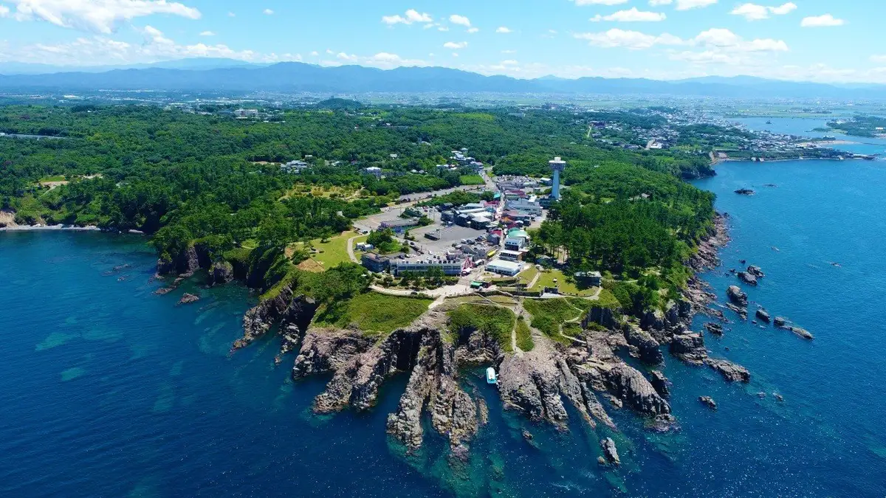
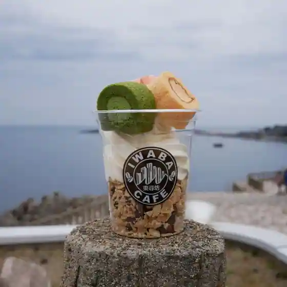

Japan / Fukui / Sakaishi
Sakaishi · Fukui
Sakaishi
Highlighted on the Fukui map.

Sakaishi City Hall

Sights · Things to do · Places to eat · Places to stay · Day-to-day services
Nearby in Fukui: ← Sabae · Takahamacho →
Other towns: Awara · Echizen · Echizencho · Eiheiji · Fukui · Fukuiikeda · Fukuimihama · Katsuyama · Minamiechizen · Obama · Oi · Onoshi · Sabae · Takahamacho · Tsuruga · Wakasacho
All towns in Fukui · Back to all prefectures